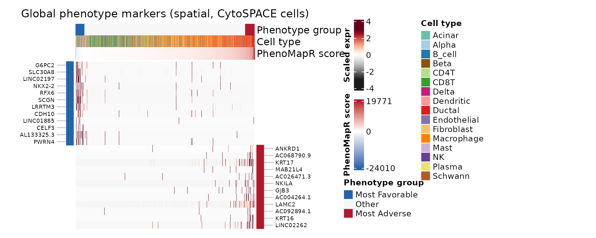
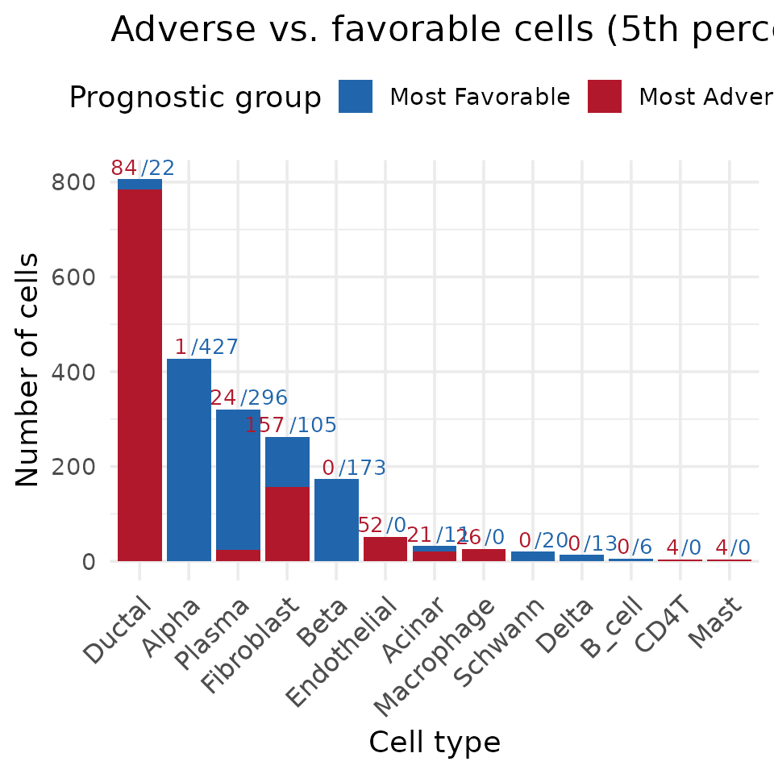

Scoring spatial transcriptomics data with PhenoMapR
Source:vignettes/spatial-transcriptomics.Rmd
spatial-transcriptomics.RmdOverview
This vignette demonstrates {PhenoMapR} on spatial
transcriptomics in two parts. Part 1 uses
spot-level 10X Visium data
(HT270P1-S1H2Fc2U1Z1Bs1-H2Bs2-Test.hgnc.rds): we show the
H&E with SpatialPlot, then score with
PRECOG Pancreatic and map z-scaled
scores with stat_summary_hex (same
coordinates and aspect as H&E; no jitter). Part 2
uses the same sample after CytoSPACE
mapped single cells onto spots
(HT270P1-S1H2Fc2U1Z1Bs1-H2Bs2-Test_processed.rds); we then
mirror the single-cell workflow (score by cell type, markers, heatmaps)
at cell resolution and assess
co-localization of prognostic groups with spatialCooccur
(nhood_enrichment(),
cooccur_local()).
The sample is from a pancreatic cancer dataset available from HTAN.
Download data and vizualize H&E histology
suppressPackageStartupMessages({
library(PhenoMapR)
library(Seurat)
library(SeuratObject)
library(ggplot2)
library(dplyr)
})
knitr::opts_chunk$set(fig.width = 12, out.width = "100%", warning = FALSE)
theme_set(theme_minimal(base_size = 14))
options(googledrive_quiet = TRUE)
googledrive::drive_deauth()
gd_id_spot <- "1OkIr7ksAWxKVjtdlGqYHMidvHZZsySEE"
rds_spot <- "HT270P1-S1H2Fc2U1Z1Bs1-H2Bs2-Test.hgnc.rds"
googledrive::drive_download(googledrive::as_id(gd_id_spot), rds_spot, overwrite = TRUE)
seurat_spot <- readRDS("HT270P1-S1H2Fc2U1Z1Bs1-H2Bs2-Test.hgnc.rds")
SpatialPlot(object = seurat_spot,
features = NULL,
image.alpha = 1,
pt.size.factor = 0) +
guides(fill = "none") 
Score spots with PhenoMapR
# Score spots
scores_spot <- PhenoMapR::PhenoMap(
expression = seurat_spot,
reference = "precog",
cancer_type = "Pancreatic",
assay = "Spatial",
slot = "data",
verbose = FALSE
)
# Add scores to Seurat object
seurat_spot <- PhenoMapR::add_scores_to_seurat(seurat_spot, scores_spot)
score_col_spot <- grep("weighted_sum_score", names(scores_spot), value = TRUE)[1]
## Z-scaled PhenoMapR score on spots (for hex / metadata plots)
sc_sp <- suppressWarnings(as.numeric(seurat_spot@meta.data[[score_col_spot]]))
seurat_spot$phenomapr_scaled_spot <- as.numeric(scale(sc_sp))
plot_score_distribution(
seurat_spot$phenomapr_scaled_spot,
main = "PRECOG Pancreatic score distribution (Visium spots)",
base_size = 14
)
PhenoMapR score distribution across spots
p <- SpatialPlot(
object = seurat_spot,
features = "weighted_sum_score_Pancreatic", image.alpha = 0
)
cols_pheno <- grDevices::colorRampPalette(c("#2166AC", "#F7F7F7", "#B2182B"))(100)
df <- p$data # extract data from SpatialPlot
spot_hex_bins <- max(10, min(50L, as.integer(round(sqrt(nrow(df))))))
ggplot(df, aes(
x = x,
y = -y,
z = scale(weighted_sum_score_Pancreatic)
)) +
stat_summary_hex(fun = mean, bins = spot_hex_bins) +
scale_fill_gradient2(
low = "#2166AC",
mid = "#F7F7F7",
high = "#B2182B",
midpoint = 0,
trans = scales::pseudo_log_trans(sigma = 0.2),
# limits = c(-4, 4),
name = "PhenoMapR\nz-score"
)+
coord_fixed() +
theme_void()
df <- SpatialPlot(
object = seurat_spot,
features = "weighted_sum_score_Pancreatic", image.alpha = 0
)$data %>%
as.data.frame()
groups_spot <- PhenoMapR::define_phenotype_groups(df, score_columns = "weighted_sum_score_Pancreatic", percentile = 0.05)
df <- left_join(df, groups_spot, by = c("cell" = "cell_id"))
# Helper function for mode
mode_val <- function(z) {
z <- z[is.finite(z)]
if (!length(z)) return(NA_real_)
as.numeric(names(sort(table(z), decreasing = TRUE)[1L]))
}
ggplot(df, aes(
x = x,
y = -y,
z = as.numeric(factor(
phenotype_group_weighted_sum_score_Pancreatic,
levels = c("Most Favorable", "Other", "Most Adverse")
))
)) +
stat_summary_hex(
aes(
fill = after_stat(factor(
value,
levels = 1:3,
labels = c("Most Favorable", "Other", "Most Adverse")
))
),
bins = 50,
fun = mode_val,
colour = NA
) +
scale_fill_manual(
values = c(
"Most Favorable" = "#2166AC",
"Other" = "#F7F7F7",
"Most Adverse" = "#B2182B"
),
drop = FALSE,
name = "PhenoMapR\nGroup"
) +
coord_fixed() +
theme_void() Here, we can see that the most favorable spots seem to cluster together,
while a subset of the most adverse also tend to co-localize.
Here, we can see that the most favorable spots seem to cluster together,
while a subset of the most adverse also tend to co-localize.
Part 2: CytoSPACE-mapped cells
Load the CytoSPACE object (single cells placed on Visium coordinates).
rds_cyto <- "HT270P1-S1H2Fc2U1Z1Bs1-H2Bs2-Test_processed.rds"
gd_id_cyto <- "1gcOyLriW9bIFNbDuQN6Vi1UsrMGKDxll"
googledrive::drive_download(googledrive::as_id(gd_id_cyto), rds_cyto, overwrite = TRUE)
seurat <- readRDS(rds_cyto)Score sample with PhenoMapR (CytoSPACE)
scores_spatial <- PhenoMapR::PhenoMap(
expression = seurat,
reference = "precog",
cancer_type = "Pancreatic",
assay = "Spatial",
slot = "data",
verbose = FALSE
)
seurat <- PhenoMapR::add_scores_to_seurat(seurat, scores_spatial)
score_col <- grep("weighted_sum_score", names(scores_spatial), value = TRUE)[1]
spatial_ci_lite <- tolower(Sys.getenv("CI", "")) %in% c("true", "yes", "1") ||
Sys.getenv("PHENOMAPR_SPATIAL_LITE", "") == "1"
spatial_max_cells <- if (spatial_ci_lite) 2000L else 5000L
assay_use <- if ("Spatial" %in% names(seurat@assays)) {
"Spatial"
} else {
Seurat::DefaultAssay(seurat)
}
plot_score_distribution(
seurat@meta.data[[score_col]],
main = "PRECOG Pancreatic score distribution (CytoSPACE cells)",
base_size = 14
)
Score by cell type
Before looking at any spatial information, we plot the PhenoMapR score by cell type to see cell types most enriched in the adverse and favorable prognostic groups.
spatial_celltype_pal <- NULL
spatial_celltype_col <- NULL
meta_names <- names(seurat@meta.data)
celltype_col <- "CellType"
df <- seurat@meta.data
n_meta <- nrow(df)
ann_vec <- NULL
if (!is.null(celltype_col)) {
raw <- df[[celltype_col]]
if (is.list(raw)) {
ann_vec <- vapply(raw, function(x) if (is.null(x) || length(x) == 0) NA_character_ else as.character(x)[1], character(1))
} else {
ann_vec <- as.vector(raw)
}
if (length(ann_vec) != n_meta) ann_vec <- NULL
}
df$annotation <- factor(ann_vec, exclude = NULL)
pal <- PhenoMapR::get_celltype_palette(levels(df$annotation))
print(ggplot(df, aes(
x = reorder(.data$annotation, .data[[score_col]], FUN = median),
y = .data[[score_col]],
fill = .data$annotation
)) +
geom_boxplot(outlier.alpha = 0.3) +
scale_fill_manual(values = pal, name = celltype_col) +
coord_cartesian(ylim = c(-10000, 15000)) +
guides(fill = guide_legend(ncol = 2)) +
theme_minimal(base_size = 14) +
theme(
axis.text.x = element_text(angle = 45, hjust = 1, size = 12),
legend.position = "right",
plot.title = element_text(hjust = 0.5)
) +
labs(y = "PRECOG Pancreatic score", x = celltype_col, title = "PhenoMapR Score by Cell-Type")) As seen in the other pancreatic cancer vignettes, the ductal cell type
is the most associated with the adverse prognostic signal, while the
beta and delta cells are most associated with favorable signal.
Interestingly, plasma cells show quite a wide range of score and contain
some of the most favorably prognostic cells across the sample.
As seen in the other pancreatic cancer vignettes, the ductal cell type
is the most associated with the adverse prognostic signal, while the
beta and delta cells are most associated with favorable signal.
Interestingly, plasma cells show quite a wide range of score and contain
some of the most favorably prognostic cells across the sample.
Where are the different cell types?
Here, we use the coordinates information from the spatial seurat object and pair them with the cell level metadata in order to plot the results in spatial context.
cell_locations <- seurat@meta.data %>%
as.data.frame() %>%
dplyr::select("Cell", "row", "col",
"CellType", "weighted_sum_score_Pancreatic") %>%
group_by(.data$row, .data$col) %>%
mutate(points_per_location = n()) %>%
ungroup()
cell_locations$CellType <- as.factor(cell_locations$CellType)
# Shared jitter and point size so all three spatial plots match (multiple cells per spot)
rng_row <- diff(range(cell_locations$row, na.rm = TRUE))
rng_col <- diff(range(-cell_locations$col, na.rm = TRUE))
spatial_jitter_w <- max(0.25, if (rng_row > 0) rng_row * 0.025 else 0.15)
spatial_jitter_h <- max(0.25, if (rng_col > 0) rng_col * 0.025 else 0.15)
spatial_point_range <- c(0.5, 1.6)
spatial_celltype_pal <- PhenoMapR::get_celltype_palette(levels(cell_locations$CellType))
ct_freq <- sort(table(cell_locations$CellType, useNA = "no"), decreasing = TRUE)
ct_order <- names(ct_freq)
cell_locations$celltype_zorder <- as.numeric(factor(as.character(cell_locations$CellType), levels = ct_order))
ct_pal <- if (!is.null(spatial_celltype_pal)) spatial_celltype_pal else PhenoMapR::get_celltype_palette(levels(cell_locations$CellType))
ggplot(cell_locations, aes(x = .data$row, y = -.data$col, color = .data$CellType,
size = points_per_location, zorder = .data$celltype_zorder)) +
geom_jitter(alpha = 0.8, width = spatial_jitter_w, height = spatial_jitter_h, shape = 16) +
scale_color_manual(values = ct_pal, name = "Cell Type", na.value = "grey90") +
scale_size_continuous(range = spatial_point_range, trans = "reverse", name = "Cells per spot") +
guides(
color = guide_legend(override.aes = list(size = 4), ncol = 2)
# size = guide_legend(override.aes = list(size = 4))
) +
theme_minimal(base_size = 14) +
theme(
plot.title = element_blank(),
axis.text = element_blank(),
axis.ticks = element_blank(),
axis.title = element_blank()
) +
coord_fixed(ratio = 0.6) +
theme_void()
Where raw PhenoMapR scores are
Spatial map of PhenoMapR score (z-scaled for color gradient). Blue = more favorable, red = more adverse.
cell_locations <- cell_locations[order(abs(cell_locations$weighted_sum_score_Pancreatic)), ]
ggplot(cell_locations, aes(
x = .data$row,
y = -.data$col,
color = scale(weighted_sum_score_Pancreatic),
size = .data$points_per_location
)) +
geom_jitter(alpha = 0.8, width = spatial_jitter_w, height = spatial_jitter_h, shape = 16) +
scale_size_continuous(range = spatial_point_range, trans = "reverse", name = "Cells per spot") +
scale_color_gradient2(
low = "#2166AC", mid = "#F7F7F7", high = "#B2182B",
midpoint = 0,
trans = scales::pseudo_log_trans(sigma = 0.2),
name = "PhenoMapR\nz-score"
) +
coord_fixed(ratio = 0.6) +
theme_void()
Where 5th percentile cells are
In order to make the visualization more apparent, we restrict the spatial map of prognostic groups to: top 5% (Most Adverse), bottom 5% (Most Favorable), and the rest (Other).
cell_locations <- cell_locations %>%
mutate(percentile = percent_rank(weighted_sum_score_Pancreatic)) %>%
mutate(prognostic_group = case_when(
percentile < 0.05 ~ "Most Favorable",
percentile >= 0.95 ~ "Most Adverse",
TRUE ~ "Other"
))
df_other <- cell_locations %>%
dplyr::filter(prognostic_group=="Other")
df_extreme <- cell_locations %>%
dplyr::filter(prognostic_group!="Other")
ggplot() +
geom_jitter(data = df_other, aes(x = .data$row, y = -.data$col, color = .data$prognostic_group,
size = points_per_location), alpha = 0.8, width = spatial_jitter_w, height = spatial_jitter_h, shape = 16) +
geom_jitter(data = df_extreme, aes(x = .data$row, y = -.data$col, color = .data$prognostic_group,
size = points_per_location), alpha = 0.8, width = spatial_jitter_w, height = spatial_jitter_h, shape = 16) +
# ggtitle("5th percentile: Most Adverse vs Most Favorable") +
scale_color_manual(
values = c(`Most Adverse` = "#B2182B", Other = "#f7f7f7", `Most Favorable` = "#2166AC"),
name = "Prognostic group",
na.value = "grey90",
drop = FALSE
) +
guides(
color = guide_legend(override.aes = list(size = 4))
# size = guide_legend(override.aes = list(size = 4))
) +
scale_size_continuous(range = spatial_point_range, trans = "reverse", name = "Cells per spot") +
theme_minimal(base_size = 14) +
theme(
plot.title = element_text(hjust = 0.5, size = 14),
axis.text = element_blank(),
axis.ticks = element_blank(),
axis.title = element_blank()
) +
coord_fixed(ratio = 0.6) +
theme_void()
Prognostic markers
find_phenotype_markers() supports the same
marker scopes on spatial data (cells or spots mapped to
spots) as in the single-cell vignette:
-
Cell type agnostic —
marker_scope = "phenotype_groups"(default): Most Adverse vs all other cells with a phenotype label, and Most Favorable vs all other cells, ignoring cell type. This asks which genes distinguish the prognostic extremes in the whole mixture on the slide. -
Cell type specific —
marker_scope = "cell_type_specific": for each cell type in metadata (here, CytoSPACE-mapped types), contrasts that type in the adverse or favorable tail vs a reference set controlled bycelltype_contrast. Defaultcelltype_contrast = "within_cell_type"compares to other phenotype bins within the same type (reduces housekeeping genes repeating across type × tail blocks).celltype_contrast = "vs_cohort_rest"restores the original cohort-wide contrast: (type ∩ tail) vs every other cell. Withcelltype_unique_genes = TRUE(default), each gene is kept in at most one adverse/favorable row (strongestavg_log2FC).
Below, Step 1–2 use
cell-type-agnostic markers; Step 2
draws
plot_phenotype_markers(..., heatmap_type = "global")
when ComplexHeatmap and circlize are
installed (same helper as the single-cell vignette),
with a pheatmap fallback otherwise. Step
3 runs cell-type-specific markers and
plot_phenotype_markers(..., heatmap_type = "cell_type_specific")
when those packages are available.
Step 1: Markers for adverse vs. favorable cells (cell type agnostic)
markers <- NULL
assay_markers <- NULL
## Tail labels on the Seurat object (5th / 95th percentiles via define_phenotype_groups).
cells <- colnames(seurat)
scores_df_markers <- seurat@meta.data[cells, score_col, drop = FALSE]
rownames(scores_df_markers) <- cells
groups_markers <- PhenoMapR::define_phenotype_groups(
scores_df_markers,
percentile = 0.05,
score_columns = score_col
)
group_col <- grep("phenotype_group", names(groups_markers), value = TRUE)[1]
if (length(group_col) == 0L || is.na(group_col) || !nzchar(group_col)) {
group_col <- NULL
} else {
seurat@meta.data[[group_col]] <-
groups_markers[rownames(seurat@meta.data), group_col, drop = TRUE]
}
if (!is.null(group_col)) {
group_vec <- seurat@meta.data[cells, group_col]
group_df <- data.frame(
cell_id = cells,
phenotype_group = as.character(group_vec),
stringsAsFactors = FALSE
)
for (a in unique(c(assay_use, "RNA", "SCT"))) {
if (!a %in% names(seurat@assays)) next
markers <- tryCatch(
PhenoMapR::find_phenotype_markers(
seurat,
group_labels = group_df,
group_column = "phenotype_group",
cell_id_column = "cell_id",
marker_scope = "phenotype_groups",
assay = a,
slot = "data",
max_cells_per_ident = spatial_max_cells,
verbose = FALSE
),
error = function(e) {
message("find_phenotype_markers (assay ", a, ") error: ", conditionMessage(e))
NULL
}
)
if (!is.null(markers) && (nrow(markers$adverse_markers) > 0 || nrow(markers$favorable_markers) > 0)) {
assay_markers <- a
break
}
}
if (!is.null(markers)) {
message("Adverse markers (top 5):")
print(head(markers$adverse_markers, 5))
message("Favorable markers (top 5):")
print(head(markers$favorable_markers, 5))
} else {
message("Marker analysis returned no results. Check that Most Adverse and Most Favorable groups have enough cells.")
}
}## p_val avg_log2FC pct_in_group pct_rest gene p_adj
## 1 0 2.977403 0.829 0.116 MET 0
## 2 0 2.548452 0.851 0.153 BAIAP2L1 0
## 3 0 2.254532 0.870 0.176 MECOM 0
## 4 0 2.828253 0.916 0.226 ITGA2 0
## 5 0 2.855858 0.833 0.147 ITGA3 0## p_val avg_log2FC pct_in_group pct_rest gene p_adj
## 1 0 4.271696 0.627 0.054 NRXN1 0
## 2 0 5.276230 0.626 0.057 RIMS2 0
## 3 0 5.356858 0.640 0.079 KCNMB2 0
## 4 0 5.375012 0.595 0.038 ABCC8 0
## 5 0 5.035273 0.589 0.036 TMEM132D 0Step 2: Heatmap of adverse vs. favorable markers (global phenotype groups)
plot_phenotype_markers(..., heatmap_type = "global")
matches the single-cell vignette: favorable- then adverse-marker rows,
column order by PhenoMapR score, and pheatmap only if
ComplexHeatmap is unavailable or marker tables are incomplete.
if (exists("markers") && !is.null(markers)) {
n_top <- if (exists("spatial_ci_lite") && isTRUE(spatial_ci_lite)) 10L else 15L
expr <- NULL
assay_order <- unique(c(
if (exists("assay_markers") && !is.null(assay_markers)) assay_markers else character(0),
assay_use, "RNA", "SCT"
))
for (a in assay_order) {
if (!a %in% names(seurat@assays)) next
expr <- tryCatch(
Seurat::GetAssayData(seurat, layer = "data", assay = a),
error = function(e) tryCatch(Seurat::GetAssayData(seurat, slot = "data", assay = a), error = function(e2) NULL)
)
if (!is.null(expr) && nrow(expr) > 0 && ncol(expr) > 0) break
expr <- tryCatch(
SeuratObject::LayerData(seurat, layer = "data", assay = a),
error = function(e) NULL
)
if (is.null(expr) || ncol(expr) == 0) {
expr <- tryCatch(
SeuratObject::LayerData(seurat, layer = "counts", assay = a),
error = function(e) tryCatch(SeuratObject::LayerData(seurat, layer = NULL, assay = a), error = function(e2) NULL)
)
}
if (!is.null(expr) && nrow(expr) > 0 && ncol(expr) > 0) break
}
if (!is.null(expr) && ncol(expr) > 0) {
cells_expr <- colnames(expr)
if (is.null(cells_expr)) cells_expr <- character(0)
cells_obj <- colnames(seurat)
cells_meta <- rownames(seurat@meta.data)
cells_use <- intersect(cells_expr, cells_obj)
if (length(cells_use) == 0 && length(cells_meta) > 0) {
cells_use <- intersect(cells_expr, cells_meta)
}
if (length(cells_use) == 0 && length(cells_expr) > 0 && any(grepl("_", cells_expr, fixed = TRUE))) {
stripped <- sub("^[^_]+_", "", cells_expr)
cells_use <- intersect(stripped, cells_obj)
if (length(cells_use) == 0) cells_use <- intersect(stripped, cells_meta)
if (length(cells_use) > 0) {
expr_cols <- vapply(cells_use, function(c) cells_expr[which(stripped == c)[1]], character(1))
expr <- expr[, expr_cols, drop = FALSE]
colnames(expr) <- cells_use
}
}
if (length(cells_use) == 0) {
message("No overlapping cells between expression and metadata; skipping heatmap. ",
"expr ncol=", length(cells_expr), ", obj ncol=", length(cells_obj),
if (length(cells_expr) > 0) paste0("; expr sample: ", head(cells_expr, 2)) else "")
} else {
expr_pm <- as.matrix(expr[, cells_use, drop = FALSE])
meta_pm <- seurat@meta.data[cells_use, , drop = FALSE]
meta_pm$cell_id_plot <- cells_use
group_col_hm <- paste0("phenotype_group_", score_col)
if (!group_col_hm %in% names(meta_pm)) group_col_hm <- group_col
ct_col_hm <- NULL
if (exists("spatial_df_celltype_col") && !is.null(spatial_df_celltype_col) &&
spatial_df_celltype_col %in% names(meta_pm)) {
ct_col_hm <- spatial_df_celltype_col
} else if (exists("celltype_col") && !is.null(celltype_col) && celltype_col %in% names(meta_pm)) {
ct_col_hm <- celltype_col
}
if (is.null(ct_col_hm)) {
meta_pm$celltype_plot <- factor(rep("Cell", nrow(meta_pm)))
ct_col_hm <- "celltype_plot"
} else {
meta_pm[[ct_col_hm]] <- factor(as.character(meta_pm[[ct_col_hm]]))
}
pal_ct <- PhenoMapR::get_celltype_palette(levels(meta_pm[[ct_col_hm]]))
drew_ch <- FALSE
if (requireNamespace("ComplexHeatmap", quietly = TRUE) && requireNamespace("circlize", quietly = TRUE)) {
adv_ok <- !is.null(markers$adverse_markers) && nrow(markers$adverse_markers) > 0L
fav_ok <- !is.null(markers$favorable_markers) && nrow(markers$favorable_markers) > 0L
if (adv_ok && fav_ok) {
ch_ht <- PhenoMapR::plot_phenotype_markers(
markers = markers,
expr_mat = expr_pm,
meta = meta_pm,
cell_id_col = "cell_id_plot",
group_col = group_col_hm,
score_col = score_col,
celltype_col = ct_col_hm,
celltype_palette = pal_ct,
heatmap_type = "global",
top_n_markers = if (exists("spatial_ci_lite") && isTRUE(spatial_ci_lite)) 12L else 20L,
n_mark_labels = 15L,
p_adj_threshold = 0.05,
column_title = "Global phenotype markers (spatial, CytoSPACE cells)"
)
drew_ch <- !is.null(ch_ht)
}
}
if (!drew_ch && requireNamespace("pheatmap", quietly = TRUE)) {
adverse_pos <- markers$adverse_markers
if (is.null(adverse_pos)) adverse_pos <- data.frame()
if (nrow(adverse_pos) > 0 && "avg_log2FC" %in% names(adverse_pos)) adverse_pos <- adverse_pos[adverse_pos$avg_log2FC > 0, ]
favorable_pos <- markers$favorable_markers
if (is.null(favorable_pos)) favorable_pos <- data.frame()
if (nrow(favorable_pos) > 0 && "avg_log2FC" %in% names(favorable_pos)) favorable_pos <- favorable_pos[favorable_pos$avg_log2FC > 0, ]
adv_ref <- markers$adverse_markers
pcol <- if (!is.null(adv_ref) && "p_adj" %in% names(adv_ref)) "p_adj" else if (!is.null(adv_ref) && "p_val_adj" %in% names(adv_ref)) "p_val_adj" else "p_val"
top_genes <- unique(c(
if (nrow(adverse_pos) > 0 && "gene" %in% names(adverse_pos)) head(adverse_pos$gene[order(adverse_pos[[pcol]])], n_top) else character(0),
if (nrow(favorable_pos) > 0 && "gene" %in% names(favorable_pos)) head(favorable_pos$gene[order(favorable_pos[[pcol]])], n_top) else character(0)
))
top_genes <- top_genes[top_genes %in% rownames(expr_pm)]
if (length(top_genes) == 0) top_genes <- head(rownames(expr_pm), 20)
mat <- as.matrix(expr_pm[top_genes, , drop = FALSE])
mat_scaled <- t(scale(t(mat)))
mat_scaled[mat_scaled < -3] <- -3
mat_scaled[mat_scaled > 3] <- 3
ord <- order(meta_pm[[score_col]])
mat_scaled <- mat_scaled[, ord, drop = FALSE]
meta_ord <- meta_pm[ord, , drop = FALSE]
ann_col <- data.frame(
`PhenoMapR Score` = meta_ord[[score_col]],
`Prognostic group` = factor(meta_ord[[group_col_hm]], levels = c("Most Adverse", "Other", "Most Favorable")),
check.names = FALSE
)
if (ct_col_hm %in% names(meta_ord)) {
ann_col$`Cell type` <- factor(meta_ord[[ct_col_hm]])
}
rownames(ann_col) <- colnames(mat_scaled)
pal_score <- colorRampPalette(c("#2166AC", "#F7F7F7", "#B2182B"))(100)
pal_group <- c(`Most Adverse` = "#B2182B", Other = "#f7f7f7", `Most Favorable` = "#2166AC")
pal_celltype <- if ("Cell type" %in% names(ann_col)) {
PhenoMapR::get_celltype_palette(levels(ann_col$`Cell type`))
} else list()
ann_colors <- list(`PhenoMapR Score` = pal_score, `Prognostic group` = pal_group)
if (length(pal_celltype) > 0) ann_colors$`Cell type` <- pal_celltype
heatmap_colors <- if (requireNamespace("paletteer", quietly = TRUE)) {
colorRampPalette(paletteer::paletteer_d("MexBrewer::Vendedora"))(100)
} else {
colorRampPalette(c("#2166AC", "#F7F7F7", "#B2182B"))(100)
}
message("Using pheatmap fallback (ComplexHeatmap unavailable or one marker table empty).")
pheatmap::pheatmap(
mat_scaled,
scale = "none",
cluster_cols = FALSE,
cluster_rows = TRUE,
show_colnames = FALSE,
annotation_col = ann_col,
annotation_colors = ann_colors,
color = heatmap_colors,
breaks = seq(-3, 3, length.out = 101),
main = "Top adverse & favorable marker genes (pheatmap fallback)",
fontsize = 12,
fontsize_row = 10,
treeheight_row = 10
)
} else if (!drew_ch) {
message("Install ComplexHeatmap + circlize for plot_phenotype_markers; pheatmap for fallback.")
}
}
} else {
msg <- "Could not retrieve expression data for heatmap"
if (!is.null(expr)) {
msg <- paste0(msg, " (expr nrow=", nrow(expr), ", ncol=", ncol(expr), "; try LayerData for Seurat v5)")
}
message(msg, ".")
}
}
Stacked barplot: adverse vs. favorable by cell type
Each column is a cell type; the height is filled by the number of adverse (5th percentile) or favorable (5th percentile) cells.
if (!is.null(group_col)) {
ct_col_bar <- NULL
if (exists("spatial_df_celltype_col") && !is.null(spatial_df_celltype_col) && spatial_df_celltype_col %in% names(seurat@meta.data)) {
ct_col_bar <- spatial_df_celltype_col
} else if (exists("celltype_col") && !is.null(celltype_col) && celltype_col %in% names(seurat@meta.data)) {
ct_col_bar <- celltype_col
} else {
for (c in c("CellType", "Celltype..major.lineage.", "cell_type", "celltype", "annotation", "seurat_clusters")) {
if (c %in% names(seurat@meta.data) && length(unique(na.omit(seurat@meta.data[[c]]))) >= 2) {
ct_col_bar <- c
break
}
}
}
if (!is.null(ct_col_bar)) {
meta <- seurat@meta.data
meta$pg <- meta[[group_col]]
meta$ct <- as.character(meta[[ct_col_bar]])
meta$ct_ok <- !is.na(meta$ct) & nzchar(trimws(meta$ct))
idx_extreme <- meta$pg %in% c("Most Adverse", "Most Favorable") & meta$ct_ok
df_bar <- as.data.frame(table(
CellType = meta$ct[idx_extreme],
Prognostic_group = meta$pg[idx_extreme],
useNA = "no"
))
if (nrow(df_bar) > 0) {
df_bar$Prognostic_group <- factor(df_bar$Prognostic_group, levels = c("Most Favorable", "Most Adverse"))
pal_bar <- c(`Most Adverse` = "#B2182B", `Most Favorable` = "#2166AC")
adverse <- df_bar[df_bar$Prognostic_group == "Most Adverse", c("CellType", "Freq")]
fav <- df_bar[df_bar$Prognostic_group == "Most Favorable", c("CellType", "Freq")]
names(adverse)[2] <- "n_adverse"
names(fav)[2] <- "n_fav"
df_labels <- merge(adverse, fav, by = "CellType", all = TRUE)
df_labels$n_adverse[is.na(df_labels$n_adverse)] <- 0
df_labels$n_fav[is.na(df_labels$n_fav)] <- 0
df_labels$label <- paste0(df_labels$n_adverse, "/", df_labels$n_fav)
df_labels$total <- df_labels$n_adverse + df_labels$n_fav
ct_ord <- levels(reorder(df_bar$CellType, df_bar$Freq, function(x) -sum(x)))
df_labels$CellType <- factor(df_labels$CellType, levels = ct_ord)
p_bar <- ggplot(df_bar, aes(x = reorder(.data$CellType, .data$Freq, function(x) -sum(x)), y = .data$Freq, fill = .data$Prognostic_group)) +
geom_col(position = "stack") +
geom_text(data = df_labels, aes(x = .data$CellType, y = .data$total, label = .data$n_adverse),
inherit.aes = FALSE, vjust = -0.3, size = 3.5, color = "#B2182B", hjust = 1.05) +
geom_text(data = df_labels, aes(x = .data$CellType, y = .data$total, label = paste0("/", .data$n_fav)),
inherit.aes = FALSE, vjust = -0.3, size = 3.5, color = "#2166AC", hjust = -0.05) +
scale_fill_manual(values = pal_bar) +
labs(x = "Cell type", y = "Number of cells", fill = "Prognostic group",
title = "Adverse vs. favorable cells (5th percentile) by cell type") +
theme_minimal(base_size = 14) +
theme(axis.text.x = element_text(angle = 45, hjust = 1, size = 12), legend.position = "top")
print(p_bar)
}
}
}
In line with the other Pancreatic cancer vignettes, PhenoMapR identifies ductal cells (and some fibroblasts) as the most associated cell type with an adverse PhenoMapR prognostic score. Alpha, plasma, and beta cells are the most associated with the more favorable prognostic signal. Interestingly, fibroblasts seems to comprise both adverse and favorable phenotypes.Step 3: Cell-type-specific phenotype markers
Here we call find_phenotype_markers() with
marker_scope = "cell_type_specific", using
the same cell type column as elsewhere in this vignette. The default
celltype_contrast = "within_cell_type"
contrasts each prognostic tail within a mapped cell
type to the other bins in that type. For the legacy cohort-wide
reference (tail vs all other cells), set
celltype_contrast = "vs_cohort_rest" (see
?find_phenotype_markers).
When both adverse and favorable marker tables are non-empty and
ComplexHeatmap is installed,
plot_phenotype_markers(..., heatmap_type = "cell_type_specific")
matches the single-cell vignette (column order: phenotype bin, cell
type, score; row blocks with optional gene labels).
markers_ct_spatial <- NULL
ct_col_spatial <- NULL
if (!is.null(group_col)) {
if (exists("spatial_df_celltype_col") && !is.null(spatial_df_celltype_col) &&
spatial_df_celltype_col %in% names(seurat@meta.data)) {
ct_col_spatial <- spatial_df_celltype_col
} else if (!is.null(celltype_col) && celltype_col %in% names(seurat@meta.data)) {
ct_col_spatial <- celltype_col
} else {
for (c in c("CellType", "Celltype..major.lineage.", "cell_type", "celltype", "annotation", "seurat_clusters")) {
if (c %in% names(seurat@meta.data) && length(unique(na.omit(seurat@meta.data[[c]]))) >= 2) {
ct_col_spatial <- c
break
}
}
}
if (!is.null(ct_col_spatial)) {
cells_ct <- colnames(seurat)
group_df_ct <- data.frame(
cell_id = cells_ct,
phenotype_group = as.character(seurat@meta.data[cells_ct, group_col]),
cell_type = as.character(seurat@meta.data[cells_ct, ct_col_spatial]),
stringsAsFactors = FALSE
)
assay_ct <- if (exists("assay_markers") && !is.null(assay_markers)) assay_markers else assay_use
markers_ct_spatial <- tryCatch(
PhenoMapR::find_phenotype_markers(
seurat,
group_labels = group_df_ct,
group_column = "phenotype_group",
cell_id_column = "cell_id",
cell_type_column = "cell_type",
marker_scope = "cell_type_specific",
celltype_contrast = "within_cell_type",
assay = assay_ct,
slot = "data",
max_cells_per_ident = spatial_max_cells,
verbose = FALSE
),
error = function(e) {
message("cell_type_specific find_phenotype_markers: ", conditionMessage(e))
NULL
}
)
if (!is.null(markers_ct_spatial)) {
message("Cell-type-specific adverse markers (top 5):")
print(utils::head(markers_ct_spatial$adverse_markers, 5))
message("Cell-type-specific favorable markers (top 5):")
print(utils::head(markers_ct_spatial$favorable_markers, 5))
}
expr_pm <- NULL
for (a in unique(c(assay_ct, assay_use, "RNA", "SCT"))) {
if (!a %in% names(seurat@assays)) next
expr_pm <- tryCatch(
as.matrix(Seurat::GetAssayData(seurat, layer = "data", assay = a)),
error = function(e) tryCatch(
as.matrix(Seurat::GetAssayData(seurat, slot = "data", assay = a)),
error = function(e2) NULL
)
)
if (!is.null(expr_pm) && nrow(expr_pm) > 0 && ncol(expr_pm) > 0) break
expr_pm <- tryCatch(
as.matrix(SeuratObject::LayerData(seurat, layer = "data", assay = a)),
error = function(e) NULL
)
if (!is.null(expr_pm) && nrow(expr_pm) > 0 && ncol(expr_pm) > 0) break
}
if (!is.null(markers_ct_spatial) && !is.null(expr_pm) && ncol(expr_pm) > 0) {
meta_pm <- as.data.frame(seurat@meta.data[cells_ct, , drop = FALSE])
meta_pm$cell_id_plot <- cells_ct
if (all(cells_ct %in% colnames(expr_pm))) {
expr_pm <- expr_pm[, cells_ct, drop = FALSE]
}
pal_ct <- PhenoMapR::get_celltype_palette(levels(factor(meta_pm[[ct_col_spatial]])))
if (requireNamespace("ComplexHeatmap", quietly = TRUE) && requireNamespace("circlize", quietly = TRUE)) {
PhenoMapR::plot_phenotype_markers(
markers = markers_ct_spatial,
expr_mat = expr_pm,
meta = meta_pm,
cell_id_col = "cell_id_plot",
group_col = group_col,
score_col = score_col,
celltype_col = ct_col_spatial,
celltype_palette = pal_ct,
heatmap_type = "cell_type_specific",
top_n_markers = 20L,
n_mark_labels = 5L,
p_adj_threshold = 0.05,
column_title = paste0(
"Cell-type-specific phenotype markers (spatial; within_cell_type contrast; ",
"use celltype_contrast = \"vs_cohort_rest\" for cohort-wide DE)"
)
)
} else {
message("Install packages 'ComplexHeatmap' and 'circlize' to draw the cell-type-specific marker heatmap.")
}
}
} else {
message("No suitable cell type column in metadata; skipping cell_type_specific markers.")
}
}Summary
-
Part 1 (spots): Spot-level object
HT270P1-S1H2Fc2U1Z1Bs1-H2Bs2-Test.hgnc.rds; H&E viaSpatialPlot; PhenoMapR scoring; hex summary of z-scaled scores plus point map of 5th-percentile groups (samecoord_fixed/ limits as H&E; no jitter). -
Part 2 (CytoSPACE):
HT270P1-S1H2Fc2U1Z1Bs1-H2Bs2-Test_processed.rds; same PRECOG Pancreatic reference at cell resolution; score distribution, score by cell type, prognostic groups, and spatial maps (jittered cells per spot). -
Co-localization:
spatialCooccurnhood_enrichment()andcooccur_local()on Visium coordinates and prognostic groups (Part 2 only; install from GitHub). -
Markers: (1) Cell-type-agnostic
find_phenotype_markers(..., marker_scope = "phenotype_groups")withplot_phenotype_markers(..., heatmap_type = "global")(or pheatmap fallback); (2) Cell-type-specificmarker_scope = "cell_type_specific"withplot_phenotype_markers(..., heatmap_type = "cell_type_specific")when ComplexHeatmap is available.
Optional download URLs: PHENOMAPR_SPATIAL_SPOT_RDS_URL,
PHENOMAPR_SPATIAL_CYTO_RDS_URL;
PHENOMAPR_SPATIAL_RDS_URL still applies to the
CytoSPACE .rds if the cyto-specific
variable is unset.
References
[1] Benard, B. A. et al. PRECOG update: an augmented resource of clinical outcome associations with gene expression for adult, pediatric, and immunotherapy cohorts. Nucleic Acids Res. 54, D1579–D1589 (2026).
Session Info
## R version 4.5.3 (2026-03-11)
## Platform: x86_64-pc-linux-gnu
## Running under: Ubuntu 24.04.4 LTS
##
## Matrix products: default
## BLAS: /usr/lib/x86_64-linux-gnu/openblas-pthread/libblas.so.3
## LAPACK: /usr/lib/x86_64-linux-gnu/openblas-pthread/libopenblasp-r0.3.26.so; LAPACK version 3.12.0
##
## locale:
## [1] LC_CTYPE=C.UTF-8 LC_NUMERIC=C LC_TIME=C.UTF-8
## [4] LC_COLLATE=C.UTF-8 LC_MONETARY=C.UTF-8 LC_MESSAGES=C.UTF-8
## [7] LC_PAPER=C.UTF-8 LC_NAME=C LC_ADDRESS=C
## [10] LC_TELEPHONE=C LC_MEASUREMENT=C.UTF-8 LC_IDENTIFICATION=C
##
## time zone: UTC
## tzcode source: system (glibc)
##
## attached base packages:
## [1] stats graphics grDevices utils datasets methods base
##
## other attached packages:
## [1] dplyr_1.2.1 ggplot2_4.0.2 Seurat_5.4.0 SeuratObject_5.4.0
## [5] sp_2.2-1 PhenoMapR_0.1.0
##
## loaded via a namespace (and not attached):
## [1] RColorBrewer_1.1-3 shape_1.4.6.1 jsonlite_2.0.0
## [4] magrittr_2.0.5 magick_2.9.1 spatstat.utils_3.2-2
## [7] farver_2.1.2 rmarkdown_2.31 GlobalOptions_0.1.4
## [10] fs_2.0.1 ragg_1.5.2 vctrs_0.7.3
## [13] ROCR_1.0-12 spatstat.explore_3.8-0 htmltools_0.5.9
## [16] curl_7.0.0 sass_0.4.10 sctransform_0.4.3
## [19] parallelly_1.46.1 KernSmooth_2.23-26 bslib_0.10.0
## [22] htmlwidgets_1.6.4 desc_1.4.3 ica_1.0-3
## [25] plyr_1.8.9 plotly_4.12.0 zoo_1.8-15
## [28] cachem_1.1.0 igraph_2.2.3 iterators_1.0.14
## [31] mime_0.13 lifecycle_1.0.5 pkgconfig_2.0.3
## [34] Matrix_1.7-4 R6_2.6.1 fastmap_1.2.0
## [37] clue_0.3-68 fitdistrplus_1.2-6 future_1.70.0
## [40] shiny_1.13.0 digest_0.6.39 colorspace_2.1-2
## [43] S4Vectors_0.49.1-1 patchwork_1.3.2 tensor_1.5.1
## [46] RSpectra_0.16-2 irlba_2.3.7 textshaping_1.0.5
## [49] labeling_0.4.3 progressr_0.19.0 spatstat.sparse_3.1-0
## [52] httr_1.4.8 polyclip_1.10-7 abind_1.4-8
## [55] compiler_4.5.3 gargle_1.6.1 doParallel_1.0.17
## [58] withr_3.0.2 S7_0.2.1 fastDummies_1.7.5
## [61] hexbin_1.28.5 MASS_7.3-65 rjson_0.2.23
## [64] tools_4.5.3 lmtest_0.9-40 otel_0.2.0
## [67] googledrive_2.1.2 httpuv_1.6.17 future.apply_1.20.2
## [70] goftest_1.2-3 glue_1.8.0 nlme_3.1-168
## [73] promises_1.5.0 grid_4.5.3 Rtsne_0.17
## [76] cluster_2.1.8.2 reshape2_1.4.5 generics_0.1.4
## [79] gtable_0.3.6 spatstat.data_3.1-9 tidyr_1.3.2
## [82] data.table_1.18.2.1 BiocGenerics_0.56.0 spatstat.geom_3.7-3
## [85] RcppAnnoy_0.0.23 foreach_1.5.2 ggrepel_0.9.8
## [88] RANN_2.6.2 pillar_1.11.1 stringr_1.6.0
## [91] spam_2.11-3 RcppHNSW_0.6.0 limma_3.66.0
## [94] later_1.4.8 circlize_0.4.18 splines_4.5.3
## [97] lattice_0.22-9 survival_3.8-6 deldir_2.0-4
## [100] tidyselect_1.2.1 ComplexHeatmap_2.26.1 miniUI_0.1.2
## [103] pbapply_1.7-4 knitr_1.51 gridExtra_2.3
## [106] IRanges_2.44.0 scattermore_1.2 stats4_4.5.3
## [109] xfun_0.57 statmod_1.5.1 matrixStats_1.5.0
## [112] stringi_1.8.7 lazyeval_0.2.3 yaml_2.3.12
## [115] evaluate_1.0.5 codetools_0.2-20 tibble_3.3.1
## [118] cli_3.6.6 uwot_0.2.4 xtable_1.8-8
## [121] reticulate_1.46.0 systemfonts_1.3.2 jquerylib_0.1.4
## [124] Rcpp_1.1.1 globals_0.19.1 spatstat.random_3.4-5
## [127] png_0.1-9 spatstat.univar_3.1-7 parallel_4.5.3
## [130] pkgdown_2.2.0 presto_1.0.0 dotCall64_1.2
## [133] listenv_0.10.1 viridisLite_0.4.3 scales_1.4.0
## [136] ggridges_0.5.7 crayon_1.5.3 purrr_1.2.2
## [139] GetoptLong_1.1.1 rlang_1.2.0 cowplot_1.2.0